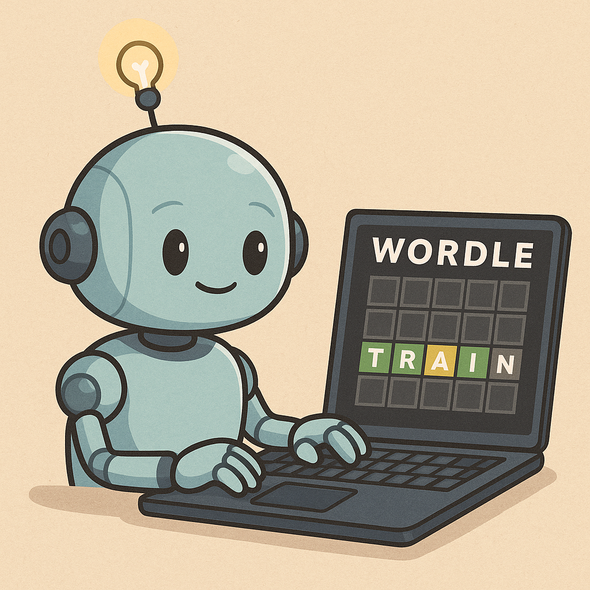

Overengineering a Wordle-playing AI Agent
Giving a Wordle-playing AI too much agency
2025-07-11

I decided to have a bit of fun over a few evenings building AI agents to solve the daily Wordle. No agent frameworks, orchestrators, or fancy abstractions—just Plain Old Code and an LLM. Not because Wordle is hard for an AI, but because it’s a small, well-scoped problem that turns out to be surprisingly useful for exploring what it really means to give an AI agent “agency.” Plus, building from scratch helps you appreciate the value of good frameworks that handle the heavy lifting for you.
Why even build a Wordle agent?
Wordle is a pretty well-constrained task: you have six tries to guess a five letter word, and each attempt gives you feedback to reason about and make the next guess. Sounds like something an AI designed to reason and act would be good at, right?
But solving Wordle is hardly a task that requires flexible decision making. You do the exact same steps in a loop: guess a word, observe the feedback, and repeat. From a functionality standpoint, building a full blown “agent” is completely overkill.
Still, this simplicity is exactly why Wordle is a great playground for testing out basic agent design principles. It’s simple to prototype quickly, yet structured enough to experiment with different levels of autonomy, tool-use, memory, etc. and see where things start to break.
Levels of Agency (in Wordle terms)
To better understand what “agent autonomy” means for a Wordle-playing agent, we can frame it across different levels of control the LLM has over the agentic system’s behavior (loosely based off of Hugging Face’s agency spectrum):
| Level | Description | Wordle Example |
|---|---|---|
| 0 | No control over execution | The LLM just outputs words to guess while the “system” handles everything else like entering words, reading feedback, looping, and ending the game. |
| 1 | Control via branching | The LLM still mostly just guesses words, but it can also output certain signals that the system can interpret to adjust control flow. For example, it can say GIVE UP to end the game after six tries. |
| 2 | Tool-calling autonomy | The LLM can now explicitly choose actions to take by picking from a list of predefined tools. It not only guesses words, but it reasons about what to do next, such as whether to guess a new word, read the game board, or clear an invalid word. The system still controls the game progression and validates tool calls, but the LLM has meaningful decision-making power. |
| 3 | Full loop control | The LLM not only decides what actions to take, but also when to stop. It can read the game board, make guesses, clear invalid entries, and decide to stop itself after a win or loss. |
| 4 | Full autonomy with planning | The LLM receives a broad goal to solve today’s Wordle and it figures out everything else: how to navigate to the game page, read the rules, construct a gameplay strategy, and execute it end-to-end. |
Of course, these levels are a bit arbitrary and in practice the boundaries can get fuzzy depending on the task. There doesn’t appear to be a formal standard (yet), but thinking in terms of agency levels helps clarify design choices and different failure modes.
For this post, I’ll focus on two agents I built: one at Level 0 and the other at Level 3. Along the way, I definitely stumbled through a few half-baked versions that landed somewhere in between, but to keep things clean I’ll stick to just these two.
The Level 0 “Agent”: Dumb but very effective
You could argue that a Level 0 agent isn’t really an agent at all. And you would be right. In fact, Anthropic would call this as an “AI workflow” instead of a true agent. The LLM only guesses words and has no control over how the game is played. The high-level logic looks something like this:
for _ in range(6):
word = call_llm_to_guess_word(game_state)
enter_word(word)
feedback = read_game_board()
update_game_state(feedback)There is no real decision-making or autonomy here. The LLM generates words and the system orchestrates everything else. It’s simple, reliable, and honestly works quite well.
Automating the game
I used Playwright to automate browser interactions with the actual Wordle page. The real control loop is a bit more complex than the pseudocode above, mostly to handle edge cases like when the LLM outputs an invalid word and the system needs to clear it before trying again.
In total, I defined four high-level “tools” (just plain Python functions) to interact with the web page. They are called by the system using fixed logic that mirrors how a human might play Wordle. But as we’ll see later, these can all easily be adapted to a more agentic setup if we want to give the LLM more agency.
The tools are:
click_word(word)
read_game_state()
clear_word()
end_game(status)At Level 0, these tools are never seen by the LLM. It just
outputs a word, and the system calls click_word, etc. because I (the
developer) programmed it to do so.
Structured output still matters
Even at Level 0, I found that I still needed some form of
structured output. The system needs to be able to reliably extract
the guessed word from the LLM’s response. While many model providers
offer structured output APIs that will guarantee a correctly
formatted output, I chose to keep it simple by just prompting the
LLM to always output guesses ending with ANSWER: word. This
actually worked quite well, and coupled with some CoT guidance, even
a small non-reasoning model like gpt-4.1-mini is able to pretty
consistently win the game in 3 to 4 guesses. Not bad for a
“non-agent”!
Here is the full instruction/system prompt I used:
You are an expert Wordle player. You will be given a history of
previous guesses and their results, as well as the current round and how many
guesses you have left.
Always reason strategically about what word you should guess next. At the end,
output your final guess in **this exact format**:
`ANSWER: [your 5-letter word]` — no quotes, no extra text, no explanation
after. Make sure the final answer is actually a 5 letter word.
If your answer does not have the final 5-letter answer in that format, it will
be ignored.
RESULT FORMAT:
Each line: Round X: WORD -> RESULT
- RESULT uses:
- c = correct (green)
- p = present (yellow)
- a = absent (gray)
- u = unknown
Example:
Round 1: CRANE -> cpaaa
=> C is green, R is yellow, A/N/E are gray.
Think step by step:
1. Analyze what letters are confirmed, eliminated, or likely.
2. Consider frequency and coverage of remaining options.
3. Choose the most promising guess.
4. Try to win in as few guesses as possible.
Then end with:
ANSWER: [your word]And the input prompt (passed in on each round):
Previous guesses:
{game_history}
Current round: {len(self.game_state)}. There are {6-len(self.game_state)} guesses left.
Think step by step and guess the next word.
End with:
`ANSWER: [your word]`I haven’t done any rigorous evals on these prompts and I’m sure they can be improved, but they work pretty well so I left it at that:
Wordle workflow demo
Level 3: Giving it more agency
Adding more agency introduces a surprising amount of complexity, and with it a bunch of new failure modes. Instead of a statically defined loop based on rounds of the game, the Level 3 agent runs in a continuous decision-making loop. Each iteration is a “step” where the LLM decides what to do, the system executes that action, and the result is added to a running memory so the LLM can reason about what to do next. Here’s the new control loop:
while game_ongoing(memory):
action = call_llm(memory)
result = execute_action(action)
memory += (action, result)This shift gives the LLM meaningful control over the gameplay. It can choose which tool to call, when to stop, and adapt based on what happened in the past.
Giving tools to the LLM
One of the key upgrades is making the agent aware of the tools it can use. Previously, we had hard-coded which tools to call and when. Here, the agent decides for itself.
A straightforward way to do this is with a tool registry, which is just a structured list that describes the available tools, including the name, what it does, its inputs, and expected outputs. This registry can then be inserted into the system prompt.
You could describe the tools in natural language, but it’s cleaner (and probably easier for the LLM to parse) if it’s in a structured format like JSON. This idea is similar to the MCP tool spec which standardizes tool definitions to help general purpose agents discover tools. I chose a similar format to the MCP standard, but a bit simplified:
self.tool_registry = [
{
"name": "click_word",
"description": "Guess a word by clicking letters on the on-screen keyboard.",
"args": {
"word": {
"type": "str",
"description": (
"The 5-letter word to type"
),
}
},
"returns": "None",
},
{
"name": "clear_word",
"description": "Clear the currently entered word if it was invalid or a mistake.",
"args": {},
"returns": "None",
},
{
"name": "read_game_board",
"description": "Read the current game board. This returns all guessed words and their result strings (e.g., 'cpaaa').",
"args": {},
"returns": "A list of tuples, each containing a 5-letter word and a 5-character string representing the result",
},
{
"name": "end_game",
"description": "End the game with a status of 'win' or 'loss'.",
"args": {
"status": {
"type": "str",
"description": "The status of the game ('win' or 'loss').",
},
},
"returns": "None",
}
]I realized during this process that if your tool functions are
well documented, this registry can almost be a direct copy-paste of
their docstrings. The LangChain @tool and Pydantic’s
@agent.tool decorators do something similar by using
function signatures and docstrings to build tool metadata
automatically.
Maintaining memory
One issue I quickly ran into as a consequence of building this from scratch was the need to maintain useful state across LLM calls. Without a framework (e.g., LangGraph) that sort of forces you to maintain state and think about what you want to keep vs. discard, it’s easy to build an agent that behaves kind of dumb.
Each LLM call is stateless by default (unless you explicitly keep previous responses that some model providers can do). Without some notion of state, the agent has no idea at each step whether it should be guessing a new word, reading the results of the previous guess, ending the game, or whatever.
My first instinct was to just pass in the previous action and its result to each LLM call, something like:
Previous action: click_word("CRANE")
Result: NoneThat helped a little, but it wasn’t quite enough to make progress
in Wordle. The agent was able to figure out that click_word should
be followed by read_game_board, and alternate between these two
steps, but it would always think it was guessing the first word of
the game. In other words, it had no sense of accumulated
progress.
To fix this, I decided to pass in the entire history of past actions and results as a running memory log. This worked much better. With full action history, the agent can now reason about how many guesses it has remaining, what tool it should call based on the previous N steps, and also whether it should stop the game.
Of course, the drawback is that this won’t scale cleanly. For short, bounded tasks like Wordle, full memory history works just fine. But for longer or more complex tasks, this will quickly bloat the context and risks confusing the model as the prompt gets messier. A sliding window or summarized version would likely work better here.
Clean context formatting
The tool registry and memory log can get pretty messy if you just dump them into the prompt in their raw form. I found that formatting both of these into cleaner, structured input blocks (even just compacting white space and removing brackets) helped the agent reason better and hallucinate less.
Sometimes, making the inputs a bit more natural-language-y also helped, though I don’t know if that’s considered best practice. It may just be a quirk of certain models responding better to more human-readable input.
Structured output (again)
Now that the agent is calling tools, having structured output becomes much stricter. The LLM now needs to return a valid tool name and correctly formatted arguments. This is where I’d recommend using structured output APIs like OpenAI function calling, Gemini response schema, etc. I chose to stick with a classic prompt-and-pray approach, which mostly worked ok but invalid JSON output was still a frequent failure mode. Definitely far more brittle than the Level 0 version that only had to output a single word.
Telling the agent what to do
As I kept refining prompts, I realized I had essentially devolved into translating the control logic in the Level 0 agent into natural language instructions for the Level 3 agent. You can hand the LLM a tool-use strategy:
### Tool usage strategy
- Guess a word using `click_word`.
- After guessing a word, call `read_game_board` to observe the outcome of the guess.
- If the result of your last guess is `'uuuuu'`, it was invalid. You MUST ALWAYS call `clear_word` and try again.
...etc.If you think about it, this is just programming with extra steps (and more API calls). Instead of just coding out what the control loop should look like, we are writing it in natural language and hoping the LLM interprets it properly. Despite giving the agent more autonomy, this strategy is clearly less robust than using Plain Old Code and letting the system handle it.
For comparison, here’s the full system prompt I used for the Level 3 agent:
You are an expert Wordle player.
Your goal is to guess the hidden 5-letter word in as few attempts as possible.
### Game Rules
- You have 6 total guesses.
- After each guess, the game displays feedback:
- 'c' means correct letter in correct position (green),
- 'p' means correct letter, wrong position (yellow),
- 'a' means letter not in the word (gray),
- 'u' means the result is unknown or the guess was invalid.
### Tool Usage Strategy
- Guess a word using `click_word`.
- After guessing a word, call `read_game_board` to observe the outcome of the guess.
- If the result of your last guess is `'uuuuu'`, it was invalid. You MUST ALWAYS call `clear_word` and try again.
- If any row on the board has result `'ccccc'`, the game is won. You should stop by calling `end_game` with status `'win'`.
- At every step, determine how many guesses you have left. If you have used all 6 guesses and none of them were correct, the game is lost. You should stop by calling `end_game` with status `'loss'`.
- Before making a guess, summarize the game board and the results of the previous guesses. Then, think carefully about what the next guess should be.
### Available Tools
{tool_registry_str}
---
### Output Format
Respond with JSON in the following format:
{{
"reasoning": "Explain what you're doing and why.",
"action": {{
"tool": "tool_name",
"args": {{ ... }}
}}
}}
Examples of valid JSON responses:
{{
"reasoning": "I need to make my first guess. CRANE is a good starting word.",
"action": {{
"tool": "click_word",
"args": {"word": "CRANE"}
}}
}}
{{
"reasoning": "The previous guess ABCDE was not a valid word. I need to clear the word and try again.",
"action": {{
"tool": "clear_word",
"args": {{}}
}}
}}
Think step by step to successfully complete the Wordle game.And the input prompt (passed in on each step):
You are an expert Wordle player currently playing a game of Wordle.
Here is a history of past actions you have taken and their results:
{self.format_action_history()}
ALWAYS use your past actions and their results to decide what to do next.
ALWAYS summarize the game board and reason about the results of the previous guesses before making the next guess.
ALWAYS state out loud the number of remaining guesses before choosing a word to guess. End the game if you have won or used up all 6 guesses.Agent failures
While the prompts seem like they should be enough to get the agent to play the game properly, in practice the Level 3 agent was much less reliable than the Level 0 workflow. Using a lightweight non-reasoning model (gpt-4.1-mini), it was only able to win about 1 in 5 games. It's possible that this is due to weak prompting or implementation flaws (I didn’t tune it much), but even so, it’s clearly much harder to get right than the less agentic workflow.
Here are a few different failure modes I observed:
- Returning invalid JSON output. This didn’t happen too often, and can easily be fixed by calling a structured output API that many model providers have.
- Tool confusion. Sometimes the LLM would get confused and call the wrong tool. Writing the correct strategy in the prompt helped a lot, but sort of defeats the purpose for more complex tasks where such a strategy would be intractable to write.
- Poor reasoning. Even when nothing was wrong with the execution flow, it was often just bad at picking a logical next word, possibly due to a messy or unclear context. Encouraging the LLM to make explicit state summaries on its own helped here. Swapping to a reasoning model (I tried o3-mini) significantly improved win rates, allowing it to consistently win in roughly the same number of guesses as the Level 0 workflow. But this is also at the expense of more tokens and more time.
- Forgetting to end the game. Even after a win or running out of guesses the agent would just keep going. I found that explicitly prompting it to tell me exactly how many guesses it had left helped reduce errors here.
Wordle agent demo
Here's a demo of the agent losing a game:
In this run, the agent made a mistake in the tool call sequence by attempting to click the third word before reading the result of the previous guess. It then hallucinated that result and oddly chose a 6-letter word "BLIGHT" which caused it to get stuck. Interestingly, this was the only time in all my manual testing did it try to guess a 6-letter word.
And here's a successful run:
Even though it wins the game, if we look closely at the debug output showing the reasoning steps, we can see that it's still not reasoning super well despite using the same model as the Level 0 workflow (gpt-4.1-mini). My hunch is that this could due to context clutter or decision-making complexity.
That said, we can still see the agent taking the right actions: clearing the invalid word "FJZKY" (I guess I forgot to prompt it to make sure it guesses real words), and also ending the game after self-detecting that it had won.
Conclusion
Many tasks don’t need full agentic control. For something like Wordle, a simple workflow will almost certainly outperform an agent. It’s less flaky and easier to debug.
Still, building agents from scratch, even for trivial problems, is a great way to internalize the hard parts: managing state, defining tools at the right granularity, and thinking about when and where to hand over control to the LLM.
Agent design is less about maximizing agency and more about deciding where it adds value. Wordle doesn’t need it, but trying to overengineer a Wordle agent makes it clearer where agency helps and where it just gets in the way.
Code is on Github!